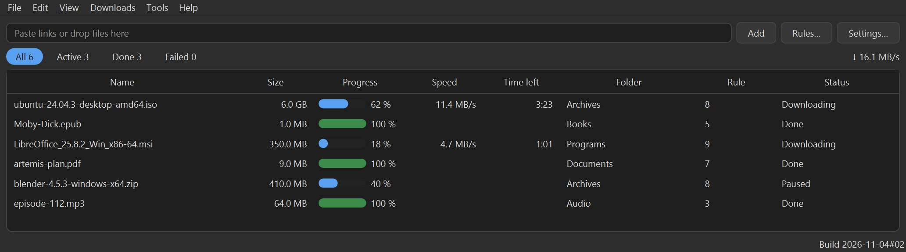
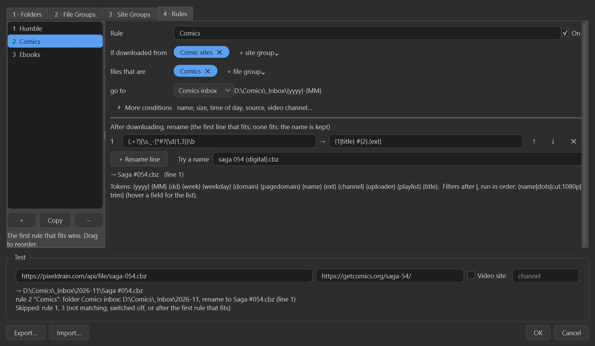

Accipio
A download manager for Windows that puts each file where you want it. Every download runs through rules you write yourself, so books land in Books, installers in Programs, and this week’s podcasts in a folder named after this week.
Build 2026-11-06#13. An installer of about 35 MB that needs no admin rights, or a zip to run without installing. Free; the source is MIT-licensed.


What it does
It starts empty: one folder, Default, and no rules, so everything goes to Default until you say otherwise. You set it up in four tabs, in this order:
- Folders. First Default, which you point anywhere. Then named places, under Default (Comics =
%default%\Comics) or anywhere else (Comics inbox =D:\Comics\_Inbox\{yyyy}-{MM}). Tokens such as{yyyy},{MM},{week},{domain}and{uploader}make folders rotate by the clock; missing folders are created when a download starts. Rules pick a folder by name, so moving it here moves every rule that uses it. - File groups: what a download is. Extensions (
cbz, cbr, cb7) and name wildcards (*invoice*), any one of them enough. The built-in groups (Video, Audio, Images, Documents, Ebooks, Comics, Archives, Programs) can be edited, say to moveisoout of Archives into a group of its own. - Site groups (optional): where a download comes from. A site matches the page you clicked the link on, the file’s own address, or either, so a link site whose files sit on file hosters is still caught through its page.
- Rules, each one sentence. If downloaded from these site groups, files that are these file groups go to this folder. Groups are picked from a list, several at once; none means anywhere or any file. Rarer conditions (the name, with wildcards or regular expressions; the size; the time of day and weekday; for videos the channel, uploader, playlist or title) are folded away under More conditions. Rules are tried in the order you drag them into, and the first rule that fits wins.
- A renamer, last in a rule. Lines of “if the name contains this regular expression, rename to that”, with the pattern’s pieces as
{1},{2}and filters such as{1|dots|title}. The first line that fits renames the file; with none, the name is kept. A try-it field shows the result as you type. - Export and import your rules, folders and groups, to set up a second PC the same way.
- “Why here?” Hover a download, or use Downloads > Why Here?, to see which rule placed it and why. The Add box checks pasted links first and shows where each one will go.
- A whole series as one link. Paste
saga-[001-150].cbz,page[1-20:2].jpg,[a-z].pdfor{intro,main}.mp3and the Add box shows it as one folded row, every link checked first; links that do not exist are left out. - Archives, as a trial you switch on in Settings. A finished zip or tar shows what is inside and where each file would go, then is unpacked as a folder, sorted file by file through your rules, or kept packed, with a suggestion to start from. “Do this every time” makes the choice a rule, and Undo takes it back. Comic and ebook files that are zips underneath are never opened.
- Direct downloads and video sites. Files come down with aria2; YouTube and other video sites with yt-dlp, at best quality, up to 1080p or 720p, or as audio only (mp3). A video is fetched when you ask for it: the extension’s toolbar button or a right-click on the page or on a link, or by pasting its address into Accipio. Tools > Update yt-dlp keeps video sites working between Accipio releases. Full quality needs ffmpeg: Settings shows which one Accipio uses, installs it with winget when there is none, or lets you pick your own. A playlist is never downloaded without your yes: a video link that comes from a playlist is just that video, and Accipio asks whether you want the rest.
- A Chrome and Edge extension hands the downloads you click in the browser, with their cookies, straight to Accipio. Accipio says yes only once its own request has worked, so a download it cannot fetch stays with the browser instead of getting lost. Its toolbar button turns that off and on, and a link menu item lets the browser download one file itself. Like the browser’s own downloads, every file carries Windows’ “from the internet” mark, so SmartScreen still warns before a downloaded program runs.
- Windows notifications when downloads are added, finish or fail, grouped so a batch does not flood you; click a finished one to see the file in its folder.
- Progress on the taskbar button. One bar for all downloads together, a badge with how many are running, yellow when all are paused and red when one failed while you were away. Hover the button for the same in words. Closing the window keeps Accipio running in the tray; File > Exit quits.
- Nothing kept that you did not ask for. A history of finished downloads is off unless you switch it on, and cookies are wiped from the queue when a download finishes.
Install
Download Accipio-<build>-windows-x64-setup.exe from the latest release and run it. It installs for your user only, with no admin rights, connects Chrome and Edge to Accipio, and can start Accipio when you sign in and fetch ffmpeg (for full-quality video) with winget. To update, use Help > Check for Updates: it downloads the new installer, checks it against GitHub’s checksum and runs it, and Accipio starts again with your rules, settings and downloads as they were (Preferences can do the check once a day; it is off unless you switch it on). Windows 10 or 11. The installer is not code-signed, so Windows SmartScreen may ask before it starts.
The browser extension is not in the Chrome Web Store yet, so it is loaded once by hand, which takes about a minute: open chrome://extensions, switch on Developer mode, choose Load unpacked and pick the extension folder. The installer’s last page offers a help page with these steps and buttons that copy what to paste, and Accipio shows the same steps until the extension is in. If Free Download Manager or a similar program is installed, the installer says so: switch one of the two browser extensions off.
Would rather not install? The release also has a zip with the same program: unzip it anywhere and start Accipio.exe.
Things to know
- There is no Linux or Mac build. The code is kept portable, but Windows is the only supported system today.
- If another download manager (Free Download Manager, Internet Download Manager) has a browser extension, switch one of the two extensions off: both try to take the same downloads.
- Not yet: running a command when a download finishes (the rules keep a command you write, but do not run it until that is safe), schedules, torrents, and a Chrome Web Store listing.
Licence
Accipio’s own source code is MIT-licensed. The Windows build also contains GPL-3.0 libraries (PyQt6 and redactor_common), so the program as a whole is distributed under the GPL-3.0, and the source of everything in it is public. aria2 (GPL-2.0) runs as a separate program; yt-dlp is in the public domain. The full list is in the README.